基礎題
下列關於電和磁的敘述，何者錯誤？
- (A) 有電流通過時，在周圍必定會產生磁場
- (B) 一個封閉線圈位在一個磁場當中，必會產生電流
- (C) 想要了解載流導線周圍磁場的方向，可使用安培右手定則
- (D) 想要了解載流導線在固定磁場中受力的方向，可使用右手開掌定則
看答案與詳解
答案：(B)
(B) ✘ 線圈要產生感應電流，必須「通過線圈的磁力線數目發生變化」；線圈靜置在穩定的磁場中，磁力線數目不變，不會產生電流。
(C) ✔ 安培右手定則：拇指指電流方向，四指彎曲方向即磁場方向。
(D) ✔ 右手開掌定則：拇指指電流、四指指磁場，掌心朝向即受力方向。
〔易錯〕「在磁場中」不等於「磁場在變化」。
小明想讓自製電磁鐵吸起更多的迴紋針，下列哪一種做法無法達到目的？
- (A) 增大通過線圈的電流
- (B) 在相同長度內把線圈繞得更密
- (C) 在線圈中插入軟鐵棒
- (D) 把電池的正、負極對調
看答案與詳解
答案：(D)
(A) ✔ 電流愈大，磁場愈強。
(B) ✔ 匝數密度愈大，磁場愈強。
(C) ✔ 軟鐵被磁化後使磁場大幅增強。
(D) ✘ 正、負極對調只會使電流反向，電磁鐵的 N、S 極互換，磁力大小不變；迴紋針一樣被吸，數量不會增加。
兩個外觀相同的 A、B 兩鐵棒，若以圖(一)放置可吸引，以圖(二)放置無法吸引，則可知下列何者？
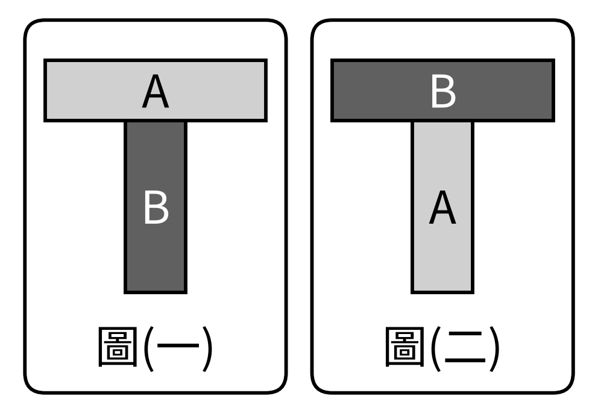
- (A) A 為磁鐵，B 為軟鐵
- (B) A 為軟鐵，B 為磁鐵
- (C) 兩者皆為磁鐵
- (D) 兩者皆為軟鐵
看答案與詳解
答案：(B)
圖(一)：B 的一端碰 A 的中段 → 可吸引，表示 B 的端點有磁性，B 是磁鐵（磁鐵的極能吸引軟鐵的任何部位）。
圖(二)：A 的一端碰 B 的中段 → 不能吸引；B 的中段磁力最弱，而 A 若是磁鐵，它的端點應能吸住鐵製的 B，所以 A 是軟鐵。
→ A 為軟鐵，B 為磁鐵 (B)。
〔易錯〕兩者皆為磁鐵時，圖(二) A 的磁極也會吸住 B，所以 (C) 不合。
將右圖中實驗裝置的開關按下、接通電路時，圖中左邊磁針的 N 極偏轉方向應為下列何者？
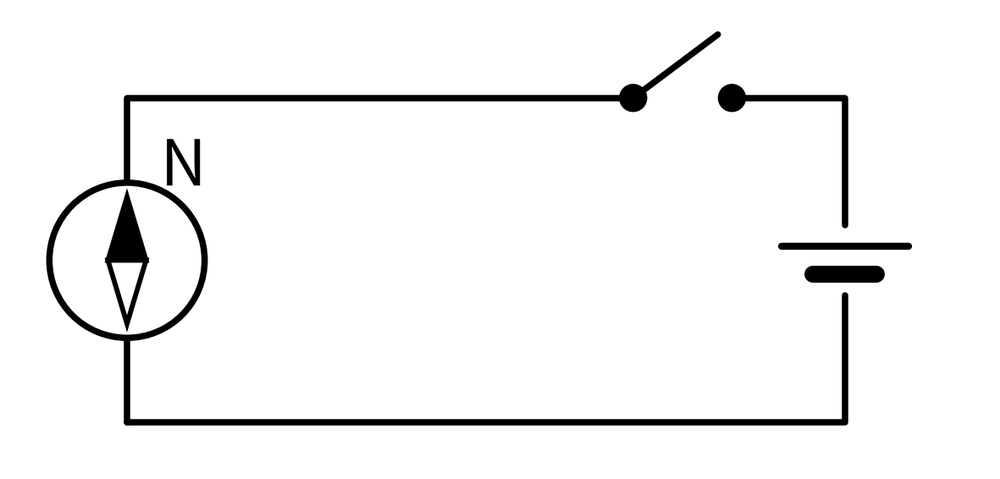
- (A) 向東偏轉
- (B) 向西偏轉
- (C) 不偏轉
- (D) 指向南方
看答案與詳解
答案：(B)
磁針放在左側導線的上方（磁針蓋在導線上）。
安培右手定則：拇指指向南方，導線上方的磁場方向指向西方 → 磁針 N 極向西偏轉 (B)。
〔易錯〕磁針若放在導線下方，偏轉方向會相反（向東）。
水平桌面上畫有由大小相等正方形組成的方格，一條導線沿著桌面上的直線水平放置，將導線通入穩定電流，如圖所示。關於載流導線在桌面上 P、Q 兩點所產生的磁場強度及方向，下列何者正確？
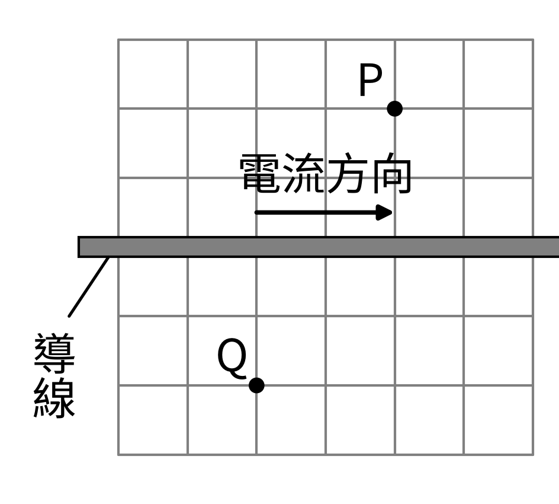
- (A) 強度相同，方向相同
- (B) 強度相同，方向不同
- (C) 強度不同，方向相同
- (D) 強度不同，方向不同
看答案與詳解
答案：(B)
P 在導線上方 2 格、Q 在導線下方 2 格，距離相同 → 強度相同；與左右位置無關。
安培右手定則：導線兩側的磁場方向相反（在桌面上，一側穿出桌面、一側穿入桌面）→ 方向不同。
→ (B)。
〔易錯〕P、Q 左右錯開不影響磁場大小。
圖為兩根條型強力磁鐵間的磁力線分布圖，箭頭表示磁力線的方向，在圖中 P 點放置一個磁針，已知磁針的黑色端表示 N 極，不考慮地磁的影響，則在磁針達到靜止平衡時的情形為下列何者？
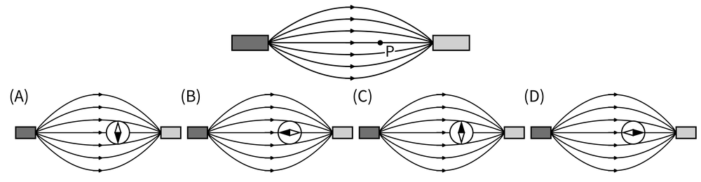
看答案與詳解
答案：(D)
P 點在中央的磁力線上，箭頭向右 → 磁針的黑色端（N 極）指向右方 → (D)。
(A)(C) ✘ 磁針與磁力線垂直。(B) ✘ N 極指向左，方向相反。
〔補充〕磁力線由左邊磁鐵出發、進入右邊磁鐵，表示左邊磁鐵的右端是 N 極、右邊磁鐵的左端是 S 極。
小白將一螺旋形線圈與電池連接，連接方式如下圖(一)所示，再將一鐵釘插入線圈中並將電池反接，如下圖(二)所示。比較圖(一)與圖(二)中甲點的磁場方向與磁場強度，下列何者正確？
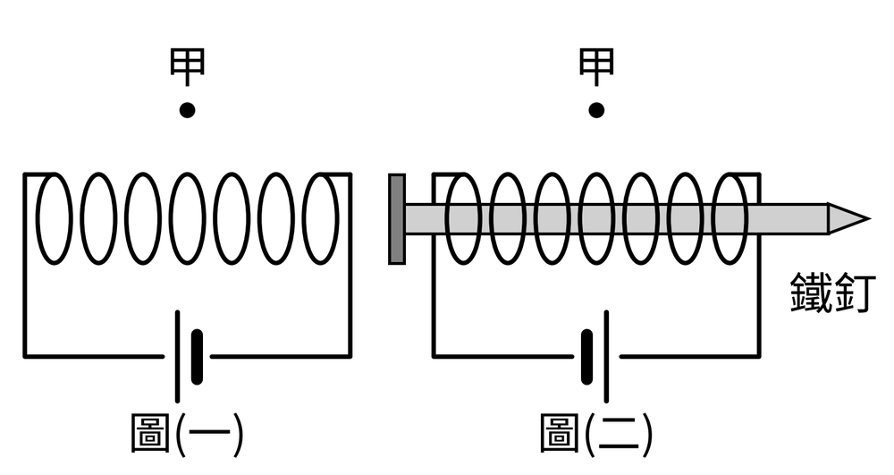
- (A) 磁場方向與磁場強度均會改變
- (B) 磁場方向與磁場強度均不會改變
- (C) 磁場方向會改變，磁場強度不會改變
- (D) 磁場方向不會改變，磁場強度會改變
看答案與詳解
答案：(A)
插入鐵釘 → 鐵釘被磁化成為鐵芯，電磁鐵磁性增強，甲點的磁場強度改變（變大）。
兩者都改變 → (A)。
大頭製作了一隻小蝴蝶，想讓蝴蝶騰空飛起，於是用一條細線，兩端各繫了一個迴紋針，其中一個用膠帶黏貼在桌上，另一根迴紋針則夾住蝴蝶，接著將條形磁鐵固定在鐵架上，稍微調整蝴蝶與磁鐵之間的距離，蝴蝶便騰空飛起了(如圖所示)。如果以 W 代表重力，B 代表磁力，T 代表拉力，則蝴蝶所受的外力示意圖，何者正確？
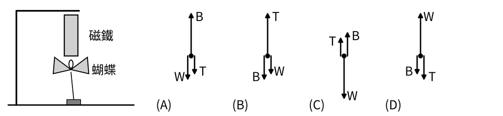
看答案與詳解
答案：(A)
重力 W 向下；細線被拉直，拉力 T 沿細線向下（線綁在桌上）；磁鐵在上方吸引迴紋針，磁力 B 向上。
平衡：B＝W＋T → 只有 B 向上，W、T 向下，且 B 最大 → (A)。
〔易錯〕細線的拉力方向是沿著線「指向線的另一端」，線在蝴蝶下方，所以 T 向下。
進階題
有一螺線管其磁力線圖形如右圖所示，甲、乙代表可能的電荷移動方向，下列敘述何者錯誤？
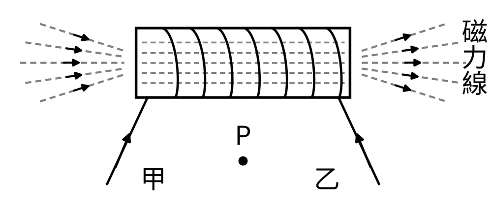
- (A) 螺線管右端可吸引磁針 S 極
- (B) 電子的流動方向為甲
- (C) P 點的磁場方向指向左方
- (D) P 點的磁力線密度小於螺線管的兩端
看答案與詳解
答案：(B)
(A) ✔ 右端為 N 極，可吸引磁針的 S 極。
(B) ✘ 右端為 N 極：右手拇指指向右，四指彎曲方向為電流方向；對照繞線，電流（正電荷）由甲進入、從乙流出，所以甲是電流方向；電子帶負電，流動方向與電流相反，應為乙。
(C) ✔ 管外磁場由 N 極繞回 S 極，P 在管外下方，方向向左。
(D) ✔ 螺線管兩端磁力線最密，P 點較稀疏。
若將長直導線纏繞空心圓柱形成線圈，並在線圈的上方及右端放置磁針，當線圈如圖接通正、負電源時，磁針最後偏轉成現在甲、乙、丙、丁的狀態。則關於線圈與甲、乙、丙、丁的極性，下列敘述何者正確？
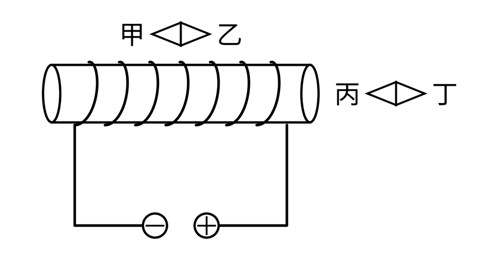
- (A) 線圈右端形成 N 極、磁針甲端是 N 極
- (B) 線圈右端形成 S 極、磁針乙端是 N 極
- (C) 線圈右端形成 S 極、磁針丙端是 S 極
- (D) 線圈右端形成 N 極、磁針丁端是 S 極
看答案與詳解
答案：(A)
右手定則：四指順著線圈電流方向彎曲，拇指指向右方 → 線圈右端為 N 極、左端為 S 極。
線圈上方：管外磁場由 N（右）指向 S（左），方向向左 → 上方磁針的 N 極指向左 → 甲端是 N 極。
線圈右端外：磁場由 N 極向外（向右）→ 丁端是 N 極、丙端是 S 極。
(A) ✔ (B)(C) ✘ 右端是 N 極 (D) ✘ 丁端是 N 極。
實驗桌上有三條南北方向放置且通有電流的導線，小芬分別將磁針放置在導線上方等距離處，觀察到磁針偏轉情況如圖所示，關於通過三條導線的電流大小及電流方向，下列敘述何者正確？
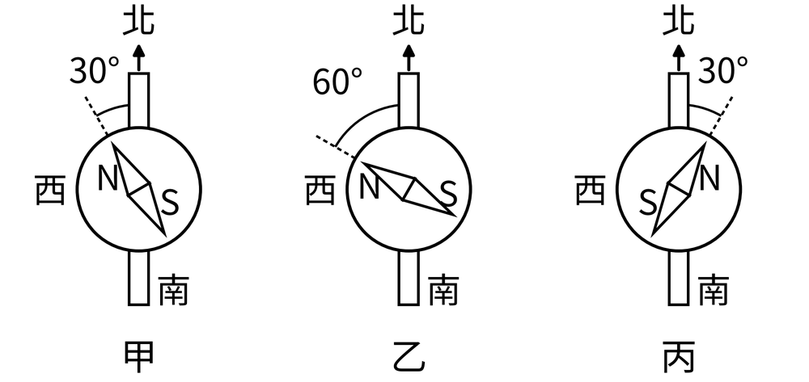
- (A) 電流大小：甲＝丙＞乙，導線甲的電流方向與導線乙、丙相反
- (B) 電流大小：乙＞甲＝丙，導線甲乙的電流方向與導線丙相反
- (C) 電流大小：甲＝丙＞乙，導線甲乙丙的電流方向均相同
- (D) 電流大小：乙＞甲＝丙，導線甲乙丙的電流方向均相同
看答案與詳解
答案：(B)
乙偏 60°，甲、丙都偏 30° → 電流大小：乙＞甲＝丙。
甲、乙的 N 極都偏向西，丙偏向東 → 甲、乙的導線磁場方向相同，與丙相反 → 甲、乙電流方向相同，與丙相反 → (B)。
瑋辰設置一載有電流 I 的長直導線甲，附近有載同方向、同電流 I 的兩直導線乙、丙，距離甲各為 r1、r2，且 r1＞r2，下列敘述何者正確？
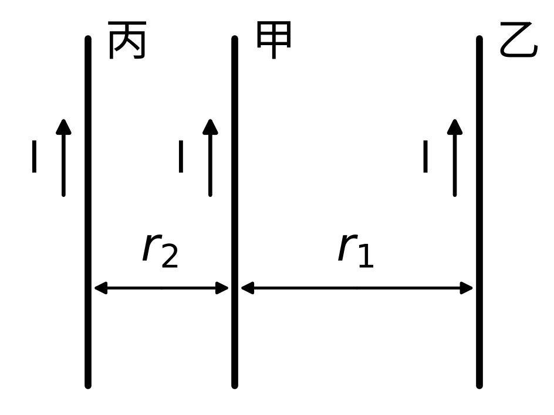
- (A) 乙、丙皆未受到甲的作用力
- (B) 乙、丙受到甲的作用力比為 r1：r2
- (C) 乙、丙受到甲的作用力相等
- (D) 乙、丙受到甲的作用力方向相反
看答案與詳解
答案：(D)
(A) ✘ 乙、丙都會受到甲的磁力。
(B)(C) ✘ 甲的磁場與距離成反比，乙、丙電流相同，受力比＝(1／r1)：(1／r2)＝r2：r1，不相等。
(D) ✔ 同方向電流互相吸引：乙在甲右側，受力向左（指向甲）；丙在甲左側，受力向右（指向甲）→ 方向相反。
〔補充〕以右手定則與開掌定則可驗證：甲在乙處的磁場穿入紙面，乙電流向上 → 受力向左。
將條形磁鐵的 S 極快速靠近一個接有檢流計的線圈左端，則線圈左端感應出的磁極，以及磁鐵與線圈之間的作用力為何？
- (A) N 極，互相吸引
- (B) N 極，互相排斥
- (C) S 極，互相吸引
- (D) S 極，互相排斥
看答案與詳解
答案：(D)
磁鐵靠近 → 線圈要阻止它靠近 → 互相排斥 → 線圈靠近磁鐵的一端（左端）感應出與磁鐵相同的 S 極 → (D)。
〔易錯〕磁鐵遠離時才是感應出異名極、互相吸引。
將直線導線鉛直懸於兩水平磁極中間，其長度方向與磁場方向垂直，如圖。當導線上通以如圖所示的電流 I 時，則導線因電流與磁場的交互作用所受力的方向為何？
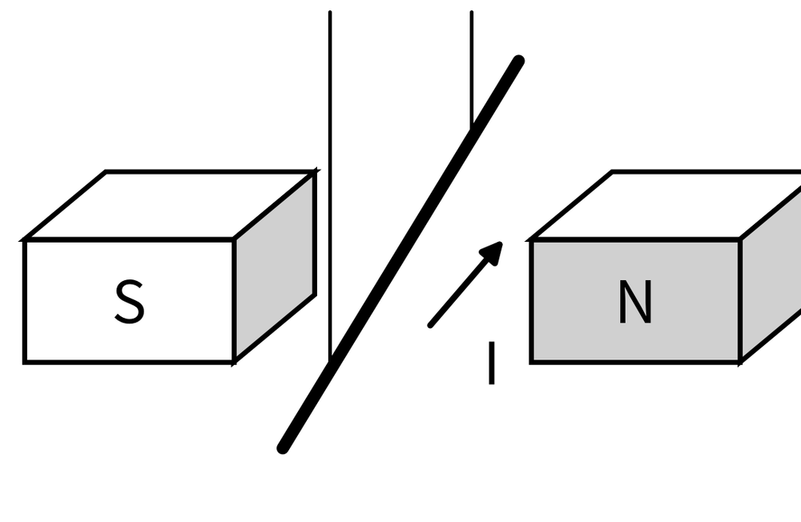
- (A) 向上
- (B) 向下
- (C) 向左
- (D) 向右
看答案與詳解
答案：(A)
導線由兩條細線懸吊、水平穿入紙面方向，電流 I 沿導線由前方流向後方（穿入紙面）。
右手開掌定則：拇指指向紙內（電流）、四指向左（磁場）→ 掌心朝上 → 受力向上 (A)。
〔易錯〕磁場方向是由 N 指向 S，不是由 S 指向 N。
小華使用電子槍將電子向北方打入一個磁場中，發現電子命中的目標在瞄準的紅心上方，如右圖所示。若射出的電子受地球磁力與重力的影響忽略不計，則該磁場的方向為何？
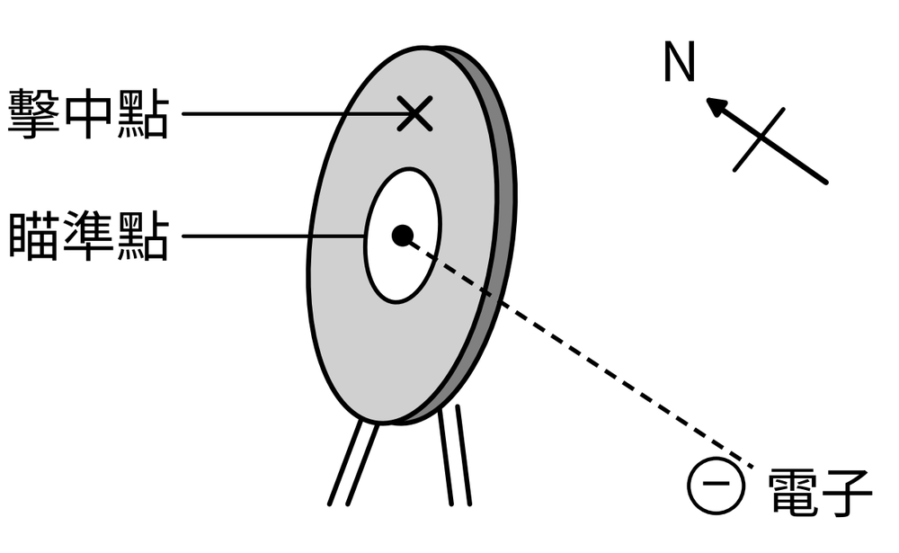
- (A) 向東
- (B) 向西
- (C) 向南
- (D) 向北
看答案與詳解
答案：(A)
電子打在紅心上方 → 受力向上。
右手開掌定則：拇指指向南方（電流）、掌心朝上（受力）→ 四指指向東方 → 磁場向東 (A)。
〔易錯〕直接把電子的運動方向當成電流方向，會得到相反答案（向西）。
水平擺放一矩形的銅線 abcd，在迴路中央放置一金屬棒 PQ，接一電池後，均通有電流，如圖。金屬棒 PQ 受到 bc、da 的電流所產生的磁場作用，所受的磁力為何？
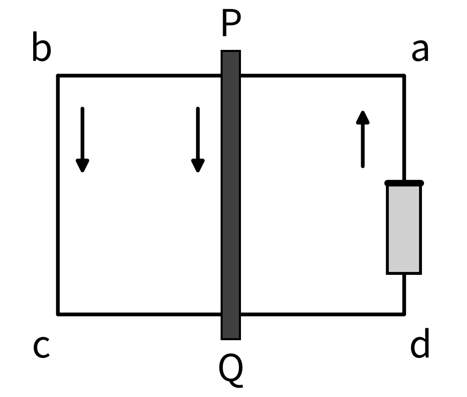
- (A) 方向向右
- (B) 方向向左
- (C) 方向向上
- (D) 合力為零
看答案與詳解
答案：(B)
bc 在 PQ 左側、電流向下：安培右手定則，PQ 所在處（bc 的右側）磁場「穿出桌面」。
da 在 PQ 右側、電流向上：PQ 所在處（da 的左側）磁場也「穿出桌面」。
兩者同向相加，合磁場穿出桌面。PQ 電流向下：拇指向下、四指穿出桌面 → 掌心朝左 → 受力向左 (B)。
〔易錯〕bc、da 電流方向相反，但 PQ 分別位於它們的不同側，產生的磁場反而同向，不會抵消。
圖為小杜做電磁感應的實驗，他將磁棒以 V 的速率向右移離線圈，檢流計瞬間偏轉，於是他又重新實驗：
(甲) 在磁棒速率不變下，將線圈單位長度的圈數增加一倍
(乙) 在線圈不改變下，磁棒平移向右的速率增加為 2V
(丙) 磁棒不動，將線圈以 V 的速度平移向右靠近磁棒
(丁) 線圈向右、磁棒向左，二者皆以 V 的速率互相靠近
上述(甲)～(丁)四次實驗中何者可產生更大的感應電流？
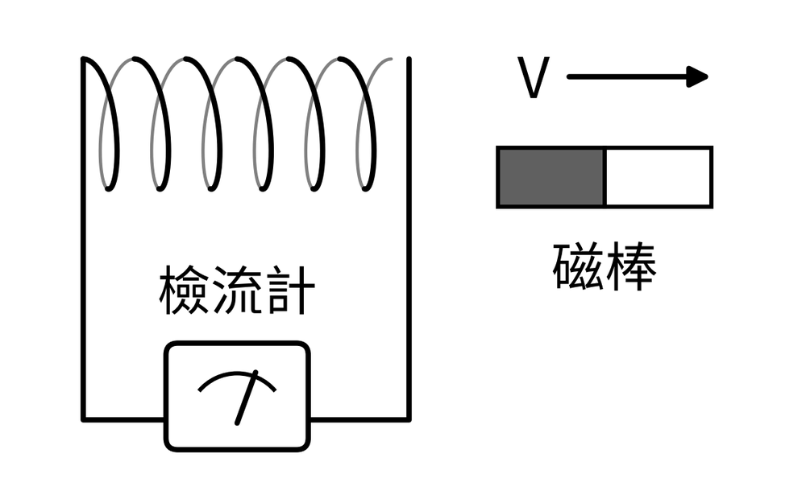
- (A) 甲乙丙丁
- (B) 乙丙丁
- (C) 甲乙丁
- (D) 乙丙
看答案與詳解
答案：(C)
(甲) ✔ 圈數增加 → 感應電流變大。
(乙) ✔ 相對速率由 V 變為 2V → 變大。
(丙) ✘ 相對速率仍為 V，只是由「遠離」變成「靠近」，感應電流大小相同（方向相反）。
(丁) ✔ 兩者互相靠近，相對速率為 2V → 變大。
→ 甲乙丁 (C)。
實驗桌上有磁針、磁棒及裝有檢流計的封閉線圈，如圖，當移動磁棒靠近線圈，會觀察到檢流計指針與磁針 N 極皆發生偏轉情形；若磁棒不動，改使線圈以 V 的速率向右移動，觀察到檢流計與磁針的情形為何？
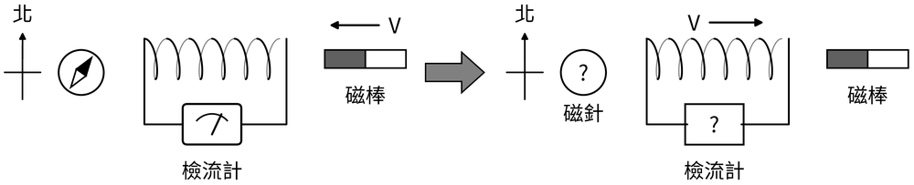
- (A) 檢流計指針與磁針 N 極皆發生偏轉
- (B) 檢流計指針發生偏轉，磁針 N 極不轉動
- (C) 檢流計指針與磁針 N 極皆不轉動
- (D) 檢流計指針不轉動，磁針 N 極發生偏轉
看答案與詳解
答案：(A)
感應電流使線圈成為電磁鐵（電流磁效應），在旁邊的磁針處產生磁場 → 磁針偏轉。
→ (A)。
〔易錯〕感應電流只看「相對運動」，磁棒動或線圈動都可以。
會考／素養題
下列四種裝置及其處理方式中，哪一種裝置的線圈會發生電磁感應現象？
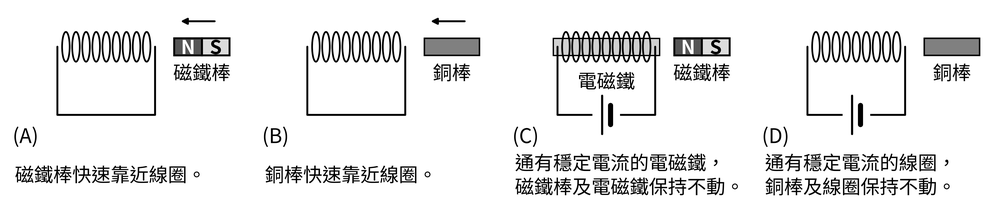
看答案與詳解
答案：(A)
(A) ✔ 磁鐵棒快速靠近線圈，通過線圈的磁力線數目增加 → 發生電磁感應。
(B) ✘ 銅不是磁性物質，銅棒沒有磁場，靠近線圈不改變磁力線數目。
(C) ✘ 電磁鐵電流穩定、磁鐵棒不動，磁場不變，線圈中的磁力線數目沒有變化。
(D) ✘ 線圈電流穩定且與銅棒都不動，沒有磁場變化。
〔易錯〕有磁場不代表有感應電流，關鍵在「變化」。
小華畫了一張電流的磁效應實驗示意圖，如圖所示，圖中磁針放置於導線的上方，磁針黑色部分為 N 極，所指方向為磁場方向。老師發現此示意圖並不合理，則下列哪一個修改方式的示意圖最為合理？
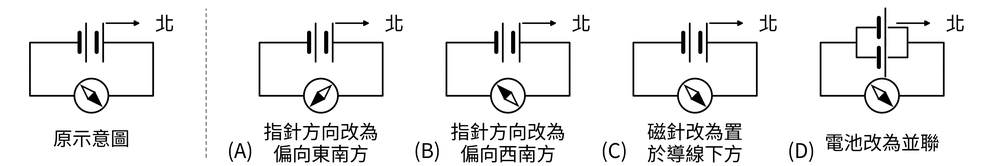
看答案與詳解
答案：(C)
電池長線（正極）在右：電流由正極流出 → 沿右側向下 → 下方導線「由北向南」（向左）流。
磁針在下方導線的「上方」：拇指指向南，導線上方的磁場指向西，與地磁（向北）合成 → N 極應偏向西北（圖中右上）；原圖畫成偏向東北（右下），所以不合理。
(A) ✘ 東南方（左下）不對。(B) ✘ 西南方（左上）也不對，應為西北方。
(C) ✔ 磁針改放在導線下方，導線下方的磁場指向東，與地磁合成後 N 極偏向東北，和圖中所畫相符。
(D) ✘ 電池並聯，電流方向不變，偏轉方向仍是西北。
有一電路裝置如圖所示，銅線甲、乙、丙、丁分別與相鄰銅線垂直，且均與磁場方向垂直，則關於通電時銅線在磁場中所受的磁力方向，下列何者正確？
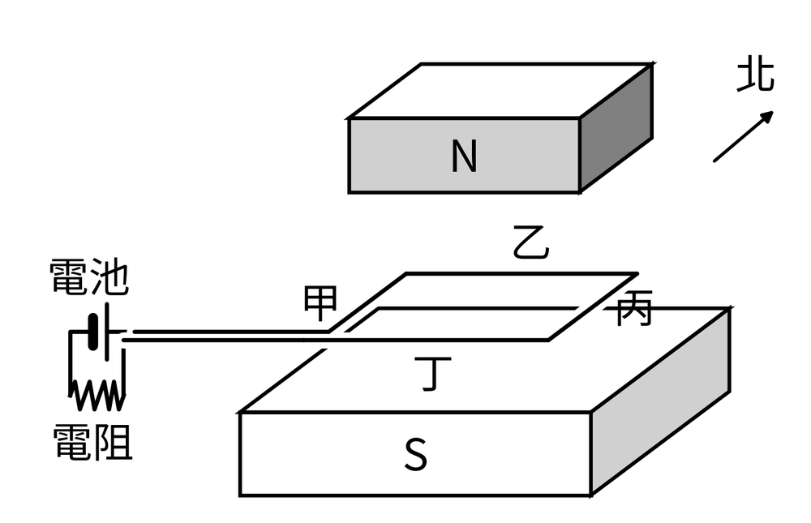
- (A) 銅線甲：向北
- (B) 銅線乙：向南
- (C) 銅線丙：向東
- (D) 銅線丁：向北
看答案與詳解
答案：(C)
電流由電池正極（長線）流出，進入甲 → 甲中電流向北 → 乙向東 → 丙向南 → 丁向西，回到電池。
右手開掌定則（四指向下）：
甲：拇指向北 → 掌心朝西，受力向西。
乙：拇指向東 → 掌心朝北。
丙：拇指向南 → 掌心朝東 ✔。
丁：拇指向西 → 掌心朝南。
→ (C)。（四段導線都受「向外」的力。）
如圖所示兩線圈放置於水平桌面上，線圈左側放置一磁針 X，左方線圈接有電池，右方線圈接有檢流計 Y，按下開關 K 後，X、Y 偏轉情形應為何？
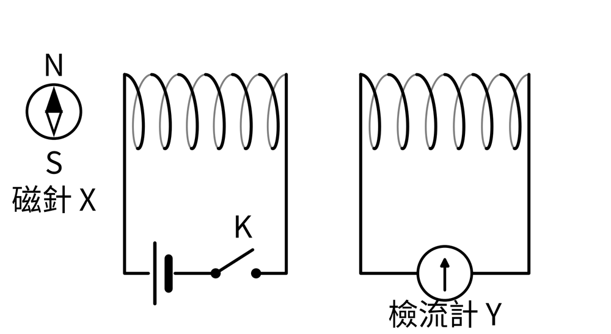
- (A) X 逆時針偏轉，Y 偏轉後又立刻回到刻度零處
- (B) X 順時針偏轉，Y 偏轉後又立刻回到刻度零處
- (C) X 逆時針偏轉，Y 偏轉後固定在某一刻度處
- (D) X 順時針偏轉，Y 偏轉後固定在某一刻度處
看答案與詳解
答案：(B)
X 在線圈左端外側，該處磁場指向線圈（向右、向東）→ 原本指北的 N 極向東轉 → 順時針偏轉。
檢流計 Y：按下開關的瞬間，左方線圈的磁場由無到有，通過右方線圈的磁力線數目改變 → 產生感應電流，Y 偏轉；電流穩定後磁場不再變化 → 感應電流消失，Y 回到零。
→ (B)。
〔易錯〕穩定電流產生的磁場不會持續產生感應電流。
柏華想設計一個磁浮飛碟，讓飛碟穩定地飄浮起來，其構造如圖所示，則下列敘述何者不適當？
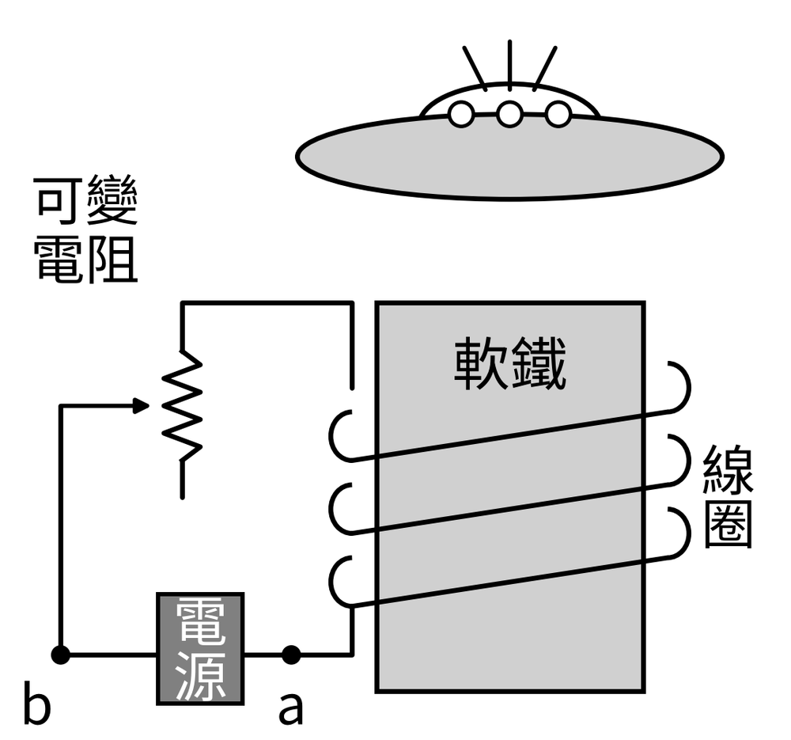
- (A) 飛碟是一塊永久磁鐵
- (B) 本實驗須利用電流磁效應原理
- (C) 若想增加飛碟漂浮的高度，則可增加環繞軟鐵的線圈數，如將可變電阻加大電阻值，也可降低飛碟漂浮的高度
- (D) 本實驗電流可採用直流電或交流電
看答案與詳解
答案：(D)
(A) ✔ 要被電磁鐵穩定排斥，飛碟須是永久磁鐵（軟鐵只會被吸引）。
(B) ✔ 通電線圈產生磁場，是電流磁效應。
(C) ✔ 線圈數增加 → 磁力增大 → 浮得更高；電阻加大 → 電流變小 → 磁力變小 → 高度降低。
(D) ✘ 交流電的方向不斷改變，電磁鐵的極性一直反轉，對飛碟時而排斥、時而吸引，無法穩定飄浮，只能用直流電。
瑋廷將羅盤置於右邊導線束的正上方，電路未接通時，磁針沿地磁方向，接通後，下列敘述何者錯誤？
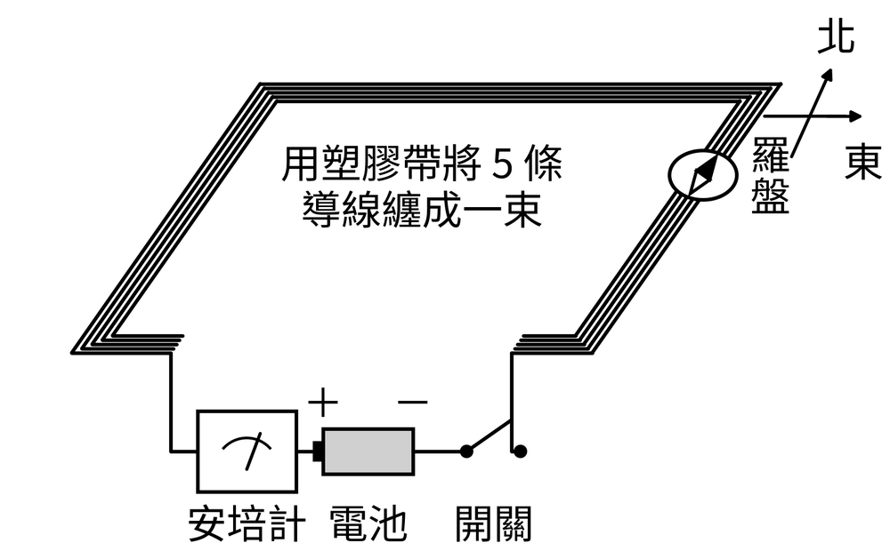
- (A) 整束導線上的總電流是安培計上讀數的五倍
- (B) 五匝線束所造成磁針的偏轉角度是單匝的五倍
- (C) 磁針 N 極向西偏轉
- (D) 線束周圍產生環形的磁力線
看答案與詳解
答案：(B)
(B) ✘ 磁場變為 5 倍，但磁針的偏轉是導線磁場與地磁合成的結果，偏轉角度不會與磁場成正比（最多也不會超過 90°），不是 5 倍。
(C) ✔ 電流由電池正極流出，經安培計、左側線束向北，再沿右側線束「由北向南」流；羅盤在右側線束正上方，拇指指南，上方磁場指向西 → N 極向西偏。
(D) ✔ 直導線周圍的磁力線為同心圓（環形）。
柯南買了一顆 LED 電燈泡，規格如左下表所示。LED 的特性為「只能往一個方向通電，當電流方向改變時就不會發亮。」柯南將 LED 接在直流發電機上，當電樞開始逆時針旋轉時，LED 就會發亮，裝置如下圖所示。若發電機電壓控制在 28 V 以下，請問改變下列哪一種操作方法，可使 LED 電燈泡達到最亮？
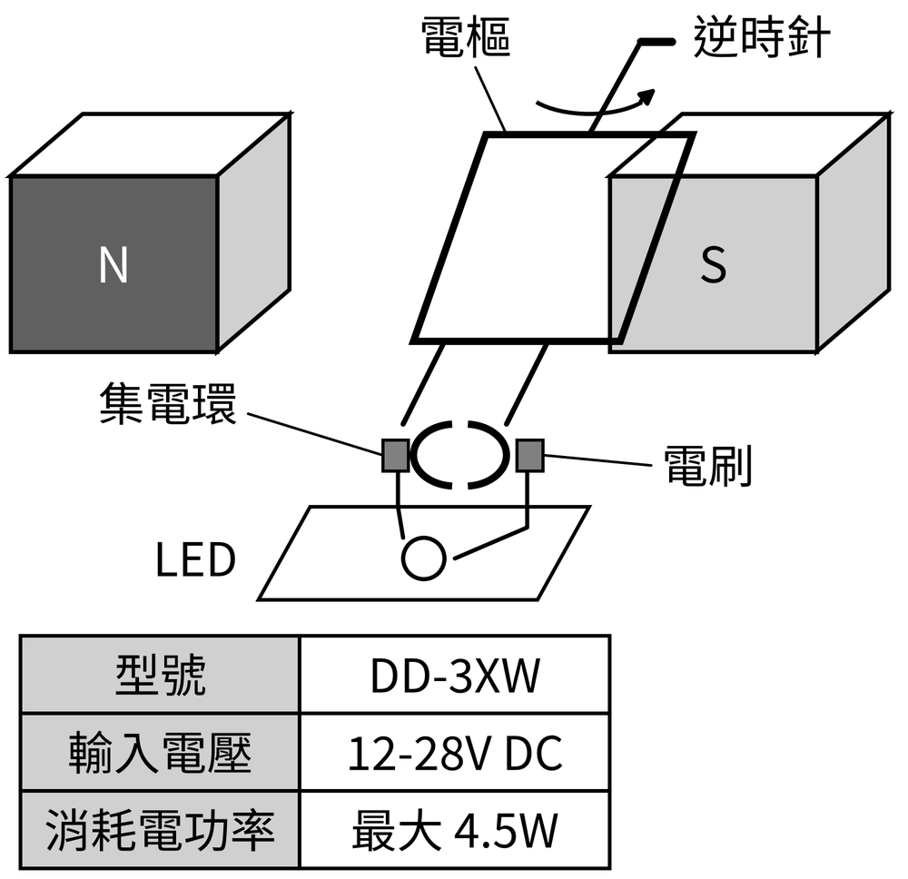
- (A) 將磁鐵 N 極、S 極的位置左右互換
- (B) 使電樞更快速的逆時針旋轉
- (C) 將兩個半圓形集電環更換成兩個圓形集電環
- (D) 將電樞轉動方向改成順時針旋轉
看答案與詳解
答案：(B)
(B) ✔ 轉得更快 → 磁力線數目變化更快 → 感應電壓、電流更大，在 28 V 以內 LED 更亮。
(C) ✘ 圓形集電環 → 變成交流發電機，電流方向週期性改變，LED 只有一半時間發亮，變暗。
(D) ✘ 轉向相反 → 電流方向相反 → LED 不亮。